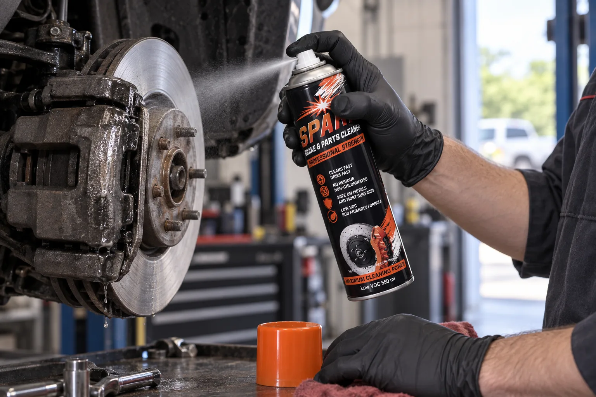

What brake cleaner does
Brake cleaner is a fast-evaporating solvent spray that removes brake fluid, grease, oil and brake dust from brake components and other metal parts. It is sprayed straight onto the part, carries the contamination away and then evaporates, so the part is left clean and dry without wiping.
Clean parts matter on brakes in particular. Contamination on a disc or pad reduces friction, causes noise and uneven wear, and stops new pads bedding in properly. A brake and parts cleaner is the quickest way to get back to bare, clean metal during a pad change, a calliper rebuild or a full service.
Chlorinated vs non-chlorinated brake cleaner
The difference is the solvent. Chlorinated brake cleaners use organochlorine solvents such as tetrachloroethylene. Non-chlorinated brake cleaners, like Spark, use hydrocarbon and alcohol based solvents instead.
| Chlorinated | Non-chlorinated (Spark) | |
|---|---|---|
| Solvents | Organochlorines, e.g. tetrachloroethylene | Hydrocarbon and alcohol based |
| Flammability | Non-flammable | Flammable: keep away from heat and flame |
| Health and environment | More hazardous to breathe; restricted in some places | Lower toxicity; Spark is low VOC |
| Residue | None | None |
| Heavy build-up | Usually one pass | May need a second pass |
For most workshops a non-chlorinated cleaner is the practical choice: it cleans brakes and parts properly with a lighter solvent load, as long as it is treated as the flammable product it is.
How to clean brakes with brake cleaner, step by step
Make the area safe
Work in a well-ventilated area, away from heat, sparks and open flame. Wear gloves and eye protection. Let brakes and other parts cool completely: never spray a hot component.
Expose the part
Lift and support the vehicle safely and remove the wheel so the disc, calliper, drum or pads can be reached. Put a drip tray underneath to catch the run-off.
Shake the can
Shake the can well to bring the formula up to pressure. Hold it upright and remove the cap to reveal the precision valve.
Spray from the top down
Spray the part directly from about 20 cm, working from the top down in one steady pass so contamination is flushed down and off the part. Repeat on heavy build-up.
Let it evaporate
Do not wipe. The solvent carries brake fluid, grease, oil and dust off the part and then evaporates without leaving a residue.
Refit once fully dry
Check the part is completely dry, then refit it. Dispose of the run-off responsibly: never empty it into a drain.

Which surfaces brake cleaner is safe on
Spark is safe on metals and most surfaces. That covers discs, drums, callipers, pad backing plates, springs, clutch components and bare or plated metal parts.
- Metals: safe. This is what brake cleaner is made for.
- Plastics and rubber: these vary. Test a small hidden area first and do not soak rubber seals or boots.
- Paint and coatings: test first, as some finishes can soften or dull.
Other uses in the workshop
A brake and parts cleaner is not only for brakes. Spark is also used to degrease clutch plates and pressure plates, release bearings, chains, jigs, workshop tools and machinery: anywhere old lubricant, oil film or shop dirt has to come off metal cleanly before inspection, assembly or refitting.
See the full list of applications and typical parts.
Brake cleaner safety rules
- Extremely flammable. Keep away from heat, sparks, hot surfaces and open flame. Do not smoke while using.
- Ventilation. Use only in a well-ventilated area and avoid breathing the spray.
- Skin and eyes. Wear gloves and eye protection and avoid contact.
- Pressurised container. Do not pierce or burn the can, even after use. Store below 50 °C, away from direct sunlight.
- Environment. Harmful to aquatic life. Never empty run-off or product into a drain.
Always read the directions on the can and the product Safety Data Sheet before use.
Common questions
How long does brake cleaner take to dry?
Spark flashes off quickly on a cool part in a well-ventilated space. Drying time depends on temperature, airflow and how much was applied, so always check that the part is completely dry before refitting it.
Can brake cleaner be used on brake pads?
Brake cleaner is used on pads, shoes, discs, drums, callipers and springs to remove fluid, dust and grease. Pads that are soaked in oil or brake fluid should be replaced, not cleaned.
Does brake cleaner damage rubber or plastic?
Spark is safe on metals and most surfaces. Rubber seals, plastics and painted finishes vary, so test a small hidden area first and avoid soaking rubber components.
Is non-chlorinated brake cleaner as good as chlorinated?
For everyday brake and parts cleaning, yes. A non-chlorinated formula like Spark removes brake fluid, grease, oil and dirt and leaves no residue. Very heavy build-up may need a second pass.